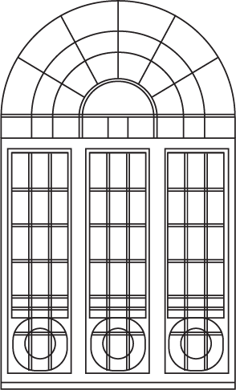

Welcome Dinner
FRIDAY, 29 MAY 2020
7PM, GOODFELLAS
Waitan, 7 Yan'an East Road, Shanghai
Welcome to Shanghai! Join us for dinner on our last night as Liu and Liu. Tomorrow we become the Lius! Champagne and good times will be flowing.
Ceremony
SATURDAY, 30 MAY 2020
4PM, 55 BY THE GROUP
Garden, 55 Wulumuqi Nan Lu, Shanghai
We are making it official! Join our families and toast to us finally saying 'yes, I do.' after 10 years together. Find the location under The Wine Residence on Google Maps, which is the location's cellar door.
Reception
SATURDAY, 30 MAY 2020
6PM, 55 BY THE GROUP
White Hall, level 2, 55 Wulumuqi Nan Lu, Shanghai
Join us for a modern Chinese banquet, with a side of embarrasing stories served up by the Best man and the Maid of Honour.
Recovery Lunch
SUNDAY, 31 MAY 2020
1PM, Location TBA
Check back here for details
Recover from the night before over a quintessential Shanghai afternoon of jasmine tea and soup dumplings.
Shanghai Faves.
If this is your first time in Shanghai, here are some of our top picks for places to go and things to see.
The Bund
This is a definite 'Do Not Miss' from us. Take a walk along the Bund, see the regal architecture from the colonial west bank; and across the Huangpu River, the ultra modern, neon lit east bank. Especially beautiful at night. There is a cruise ferry you can take from Shiliupu Pier. Head to the Fairmont Peace Hotel afterwards and grab a drink at the Jazz Bar. The house band is made of members aged 80 and above. They play old Chinese songs from the 20s and are absolute on fire!
Colonial Shanghai
Shanghai was a European colony from the late 1800s to early 1900s. So you'll find a lot of British, French, and other European influences in the architecture in many areas of old Shanghai.
Xintiandi
Xintiandi is a collection of restored colonial alleyways which houses lots of good shopping, casual, and fine dining on offer.
Sinan Mansion
Sinan Road and Sinan Mansion are sort of the newer rendition of Xintiandi. A collection of beautifully restored colonial mansions now houses a hotel, restaurants - the house French restaurant is amazing. It's quite nice to wonder through.
Former French Concession
Wonder around the quiant roads former French concession area if you'd like a slightly less touristy experience. You'll see beautiful French mansions, many now restaurants and private clubs. Lots of good cafes and boutiques in this area.
Gardens and Temples
Yu Garden and Chenghuang Miao
Yu Garden (or Yuyuan Garden) is a traditional Chinese garden with a manicured pond at its centre, which also houses the famous Nanxiang Soup Dumpling Restaurant. Attached to the garden is Chenghuang Miao - Buddist temple with a bustling market. It can be touristy but can be quite fun to visit.
Jing'an Temple
Located downtown, Jing'an Temple is arguable the most well-known and popular Buddist temple in Shanghai. Locals visit to pray for good luck or get their fortunes. It can get busy so it's best to go early.
The parks
Parks in Shanghai can be quite a fun expereince. You'll see groups of elderlies doing synchronised dance, with or without fans, in the morning or evenings. Fuxing Park (next to Sinan Mansion), Renmin Park, Huaihai Park are all good options.
Modern Shanghai
What I love about Shanghai is the constant juxtaposition of the east and the west, the old and the new. Everything we've mentioned before are gems from old Shanghai. Here are our favourites from the modern era.
The skyscrapers
The three tallest buildings in Shanghai are all located in the altra modern Pudong: the Oriental Pearl TV Tower, the oldest and the easiest to identify (the one with the three orbs); Jinmao Tower, the second tallest; and the tallest, Shanghai Tower (otherwise known as 'the bottle opener' - you'll understand when you see it). Shanghai Tower in particular has a great cocktail bar on the higher floors, with a fantastic view of the other two skyscrapers, and a sweeping birdseye view of Shanghai.
The mall to end all malls
________ _____________ ____
Soup Dumplings
You simply cannot visit Shanghai without having Xiaolongbao. It's like going to Paris without having a croissant - It's just not right. Here are our picks:
- Nan Xiao Guan - elegant setting, multiple locations
- ___________
- ___________
- Nanxiang Xiaolongguan, Yu Garden - the most famous, the dumplings are really good but the line is long. We recommend going to the top floor restaurant. The price is a little higher but the wait is shorter, and you get a great view of the garden.
- Also try Shengjianbao, a crispy cousin to your standard soup dumping. This pan fried bao is fluffy on top, crispy on the bottom, and deliciously juicy in the middle. Find them at Xiaoyang Shengjian - multiple locations.
And More Food
Where do we even start? There is just so much on offer!
For Fancy Chinese
- ___________
- ___________
Eat like the locals
- ___________
- ___________
Really eat like the locals
- ___________
- ___________
When you need a Chinese food break
- Element Fresh, Xintiandi - fresh salads, juices, decent pasta, vegetarian options.
- Green & Safe, Xintiandi - organic casual Western dining, vegetarian friendly. Decent winelist too.
Caffine
The easiest option would be Starbucks, as they are almost literally everywhere, and accept all major credit cards. But there are are few boutique cafes that offers a slightly better roast. Not as good as Melbourne, but slightly better than Starbucks.
- ___________
- ___________
Beyond Shanghai
Zhouzhuang
A beautiful, small water town 1.5 hours outside of Shanghai with 100 years of history. Think of it as a Chinese village built on a network of canals. An easy day trip. Book a private tour or visit as part of a tour group
Wuzhen
Another water town about 3hrs outside Shanghai, bigger and even more historic than ZhouZhuang, perfect for an overnight trip. Sail through the canals at dusk, and stay at many of the local air bnbs in traditional houses right on the canal for a truely unique Jiangna (South of Yangtze River) expereince.
Hangzhou
____
Disneyland
If you have kids to entertain, Disneyland is about an hr outside of Shanghai and is accesible by the subway.
Travel.
Visa
Travelling to China requires a visa. As long as you have all of the required documents, the process is relatively simple and usually takes about 1 week. We recommend getting it done at least 2 months prior to travel, on the off chance a resubmission is needed (ensure you provide all the documents required as printed copies to avoid re-submission.)
Submit your application at a Visa Application Centre (if you are not located in Australia, please check the Chinese Consulate website in your country of residence). We recommend going early in the morning to avoid a long wait.
Alternatively, there is a 72 hour transit option requiring no visa, provided that you are travelling out via a THIRD DESTINATION OUTSIDE MAINLAND CHINA. For example, you are eligible if you are flying from Melbourne to Shanghai, then from Shanghai to Tokyo within 72 hrs of entering China. However, if you are flying from Melbourne to Shanghai, then Shanghai to Melbourne (or any other cities in Australia), you must apply for a visa. If you need help, you know how to reach us!
Flying In
You will land in one of Shanghai's two airports: Pudong and Hongqiao. The best way to get to your hotel is via taxi as they are inexpensive and convenient. Make sure you go to the official airport taxi stand and only take taxis with a top light and a working meter. Taxi drivers do not solicite travellers for business. If anyone approaches you in or outside the terminal offering taxi or car service, it is best to ignore them no matter what they say (e.g. they might say the taxis don't go to your specified hotel).
Barring awful traffic, a taxi ride from Pudong to downtown (e.g. the bund) should be about 200RMB, no more than 250RMB. A taxi ride from Hongqiao to downtown should be about 50-70RMB.
Stay
There are hundreds of accommodation options in Shanghai, from luxury hotels to Airbnbs.
The best areas to stay in are the historic Jing'an District and Huangpu District. Both districts allows easy access to The Bund and the Old French Concession. You will be surround by beautiful architecture from the colonial period. Great dining and shopping options are also in abundance. The nearby Xuhui and Changning Districts are convenient and accessible alternative options.
A few of our favourites:
- Puli Hotel
- South Bund Hotel
- The Fairmont Peace Hotel
If you need help choosing a hotel, let us know and we'd be happy to help!
Getting Around
Subway
Shanghai's subway system is excellent. Clean, modern, frequent and with extremely high geographical coverage. Almost all signs are bilingual so it's fairly easy to get around. Most lines run till late but last train run at different times. Best to check if you are planning to go home late on the subway. You can purchase single trip tickets with CASH (coins or small notes) or purchase a pre-loaded Shanghai Public Transportation Card if you are staying longer than a week, which can be used for subway, taxi, bus, and if you fancy, ferry.
Taxi
Convenient and inexpensive. Most major sightseeing spots will have a taxi stand. Be careful of unlicensed cars as they will always overcharge and try to take you the long way. Only take taxis with a top light and a working meter. Some nights and weekends, some taxi drivers would refuse to operate by the meter, instead negotiate a one-off price. One word: haggle!
Didi
China's Uber. If you purchase a Chinese SIM card (available at the airport or Tel-co stores), you will be able to download and use the app.
Bike Share
Travel like a local and ride a bike. Download one of the many bike sharing apps to. But be careful and do watch out for cars!
Walking
Although Shanghai is massive, little pockets are very walkable and fun to explore on foot. Hop over to [Things To Do] to see our recommendations.
Good to Know
Payment
most global chains (starbucks, etc.) and large department stores accept Mastercard and Visa. However it is best to exchange some cash for taxi, subway, markets, etc. Tipping is not accustomary or necessary in China.
Internet Access
Download either ExpressVPN or NordVPN before your trip, you should be able to use go on all the sites and use all the apps with no problems.
Maps
google maps isn't the most reliable in China. Apple Maps is better. Autonavi Navigation is a good app to have as it is more reliable in China.
Water
Tap water is not drinkable in China. Go for bottled water or do what the locals do, bring tap water to a boil and cool it down. Most hotels supply a kettle in the room.
Food
Generally it is perfectly safe to eat in restaurants in Shanghai. Street foods are generally ok, too. But it is not a bad idea to bring some stomach meds if you are planning to venture into the night markets.
Emergencies
Ambulance: 120
Police: 110
Fire: 119
